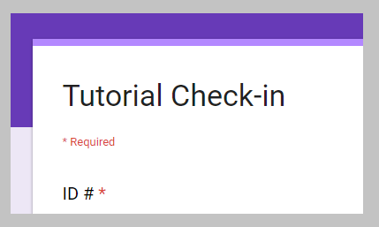

Tutorial is free tutoring with Mr. Rowe at 2:23PM to 3:20pm Wednesday or Thursday or Friday. Some weeks we have it two days in the same week. Study hall is every day in the library with fast computers. On Tuesdays study hall is in the cafetria because teachers have a meeting. Phones away from your hands in tutorial. Earbuds only for videos listed on Mr. Rowe's website
Sign into tutorial on paper, and online
a) Paper is on the clipboard in class
b) Open this link -->
LMS website with help for every assignment
c) Sign in online to tutorial, click below

Be a guest speaker, host a job shadow, mentor one student. Portland Public Schools is reacing out to our community to ask for volunteers who want to help provide opportunites for students to explore career options. Click here https://www.pps.net/partnerconnect
Career News is here Click here
Welcome students and parents. If your student knows their subdomain you can change the url to view their website. Example 511.digitalfhs.com